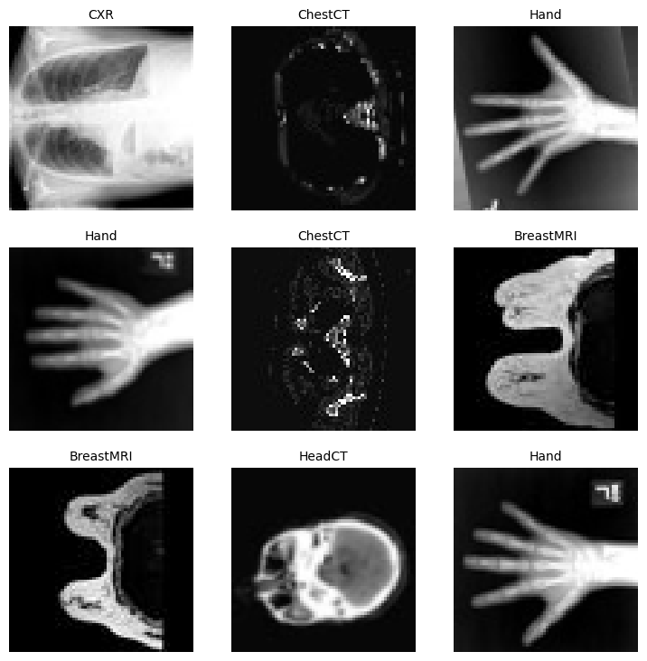
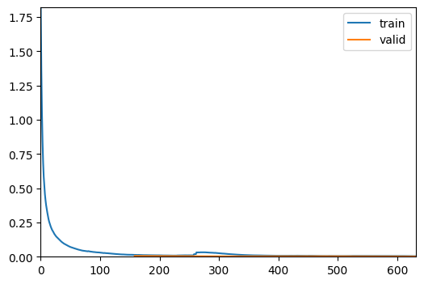
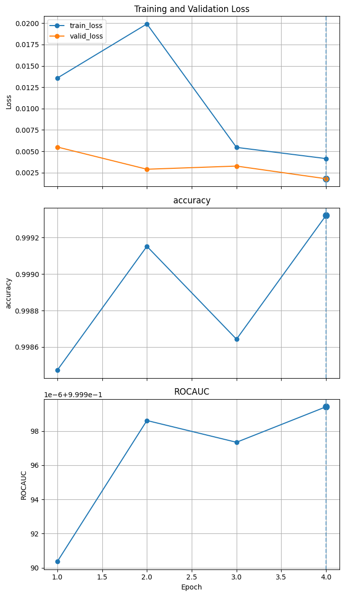

Untarring contents of '/home/bm/Documents/bioMONAI/nbs/_data/f8b235cefbf0effb29acd992b838db5a-MedNIST.tar.gz' to '/home/bm/Documents/bioMONAI/nbs/_data/.'
The file has been downloaded and saved to: /home/bm/Documents/bioMONAI/nbs/_data
Change suffix from .jpeg to .jpg (bioio package only accepts .jpg)
directory = root_dir +'MedNIST/'for p in Path(directory).rglob("*.jpeg"): p.rename(p.with_suffix(".jpg"))
Set deterministic training for reproducibility
set_determinism(seed=0)
Read image filenames from the dataset folders
First of all, check the dataset files and show some statistics.
There are 6 folders in the dataset: Hand, AbdomenCT, CXR, ChestCT, BreastMRI, HeadCT,
which should be used as the labels to train our classification model.
img_paths = get_images(directory)class_names =sorted(x for x in os.listdir(directory) if os.path.isdir(os.path.join(directory, x)))class_map = {c: idx for idx, c inenumerate(class_names)}num_class =len(class_names)num_total =len(img_paths)image_width, image_height = image_reader(img_paths[0]).squeeze().shapenum_each = [len(get_images(directory+class_name)) for class_name in class_names]print(f"Total image count: {num_total}")print(f"Image dimensions: {image_width} x {image_height}")print(f"Label names: {class_names}")print(f"Label counts: {num_each}")
Randomly pick images from the dataset to visualize and check
data.show_batch()

Define network and optimizer
Set learning rate for how much the model is updated per batch.
Set total epoch number, as we have shuffle and random transforms, so the training data of every epoch is different.
And as this is just a get start tutorial, let’s just train 4 epochs.
If train 10 epochs, the model can achieve 100% accuracy on test dataset.
Use DenseNet from MONAI and move to GPU device, this DenseNet can support both 2D and 3D classification tasks.
Execute a typical training that run epoch loop and step loop, and do validation after every epoch.
Will save the model weights to file if got best validation accuracy.
Better model found at epoch 0 with ROCAUC value: 0.9999903617105075.

Better model found at epoch 1 with ROCAUC value: 0.9999986207392134.
Better model found at epoch 3 with ROCAUC value: 0.999999425198956.
Plot the loss and metric
plot_metrics(trainer)

torch.cuda.max_memory_allocated() /1024**2
3254.9599609375
Evaluate the model on test dataset
After training and validation, we already got the best model on validation test.
We need to evaluate the model on test dataset to check whether it’s robust and not over-fitting.
We’ll use these predictions to generate a classification report.